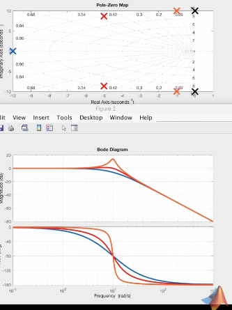
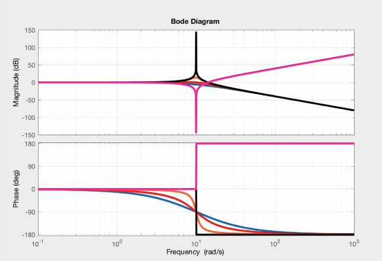

Filters
Notch Filter or Band Stop Filter (For Resonance)
Why Low-Pass + High-Pass doesn’t Work
Since first-order low pass and high pass filters have stop-band slopes at \(\pm 20 dB/decade\), the closer the two filters get, the smaller the attentuation gets. This implementation therefore doesn’t hold well for narrow band filters.

Reliable Notch Filter Implementation
Damping and Bode Plot Bumps
For a second order system, damping directly relates to the bumps or peaks in the Bode plot of the transfer function.
- A critically damped system have repeated poles with no bumps in the Bode Plot.
- An under-damped system have a bump at the resonance frequency.
- A system with no-damping has infinite gain at renonsance.
 
Notch Filter
- Step 1: Take the inverse of the un-damped transfer function to get the narrow notch. This inverts the resonance frequency bode plot, and we get a narrow band-stop at resonance frequency. We just need to flatten the band to the right of the notch.
- Step 2: Add two poles symmetric with respect to the notch frequency. The closer together the poles are, the narrower the notch.
- Step 3: The gain at notch frequency can be attenuated by adding damping to the numerator, which affects the depth of the notch.
We multiply and divide by a for symmetry since x-aix of bode plot is log scale. Division equals subtraction in this case.
- Set width of notch with a
- Set notch dept with \(\zeta\)
- Set notch location with \(\omega_n\)